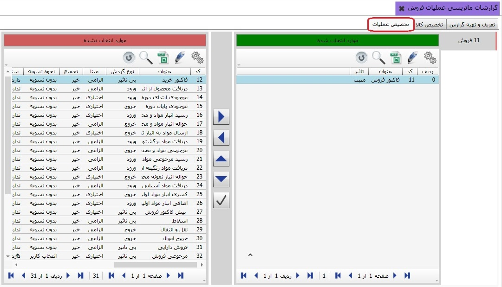

با استفاده از این بخش می توانید گزارش های ماتریسی تهیه کنید،این گزارش ها می توانند بر پایه ی اشخاص و عملیات، مقدار فروش و ... باشند، در ادامه نحوه ی دریافت گزارش را شرح خواهیم داد. وقتی بر روی منوی گزارشات ماتریسی عملیات فروش کلیک کنید صفحه ی زیر باز می شود:

همان طور که در تصویر بالا مشاهده می کنید پنجره به صورت پیش فرض در تب تعریف و تهیه ی گزارش قرار دارد، در این تب می توانید گزارش مورد نظر خود را تعریف کنید، برای تعریف گزارش بر روی کلید اضافه (F8) کلیک کنید، فرم مربوطه را پر کنید و سپس کلید تایید را بزنید. در پایین این صفحه کلید چاپ گزارش و فیلترهای آن وجود دارند، دقت داشته باشید که در ابتدا تنظیمات لازم را باید در تب دوم و تب سوم انجام دهید تا گزارش را به طرز صحیح تهیه کنید. اکنون به تب دوم می رویم :

در این تب ابتدا گزارشی که در تب اول تعریف کردید را از سمت راست صفحه انتخاب می کنید، سپس از سمت چپ تصویر کالای مورد نظر خود را انتخاب می کنید و بعد از انتخاب به سمت راست صفحه منتقل می کنید، این به این معنی است که کالای انتخاب شده در گزارش شما نمایش داده خواهد شد تب سوم را در تصویر زیر مشاهده می کنید:
در تب اول گزارش خود را تعریف کردید و در تب دوم کالای مورد نظر را به گزارشی که تعریف کرده بودید تخصیص دادید حالا در این تب عملیات مورد نیاز خود را به گزارشی که تهیه کرده بودید تخصیص دهید، برای دریافت گزارشی که تهیه کرده اید به تب اول باز گردید و پس از تعیین کردن فیلتر های مورد نیاز در پایین صفحه کلید چاپ گزارش را بزنید.